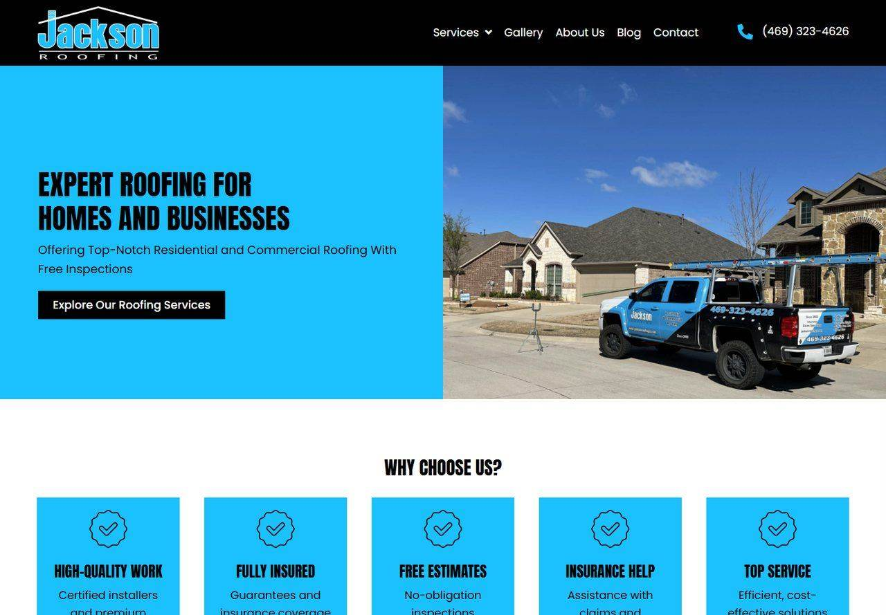
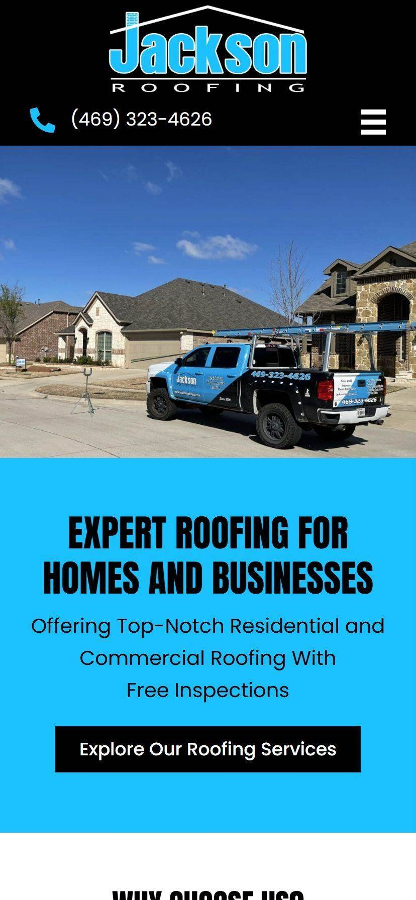
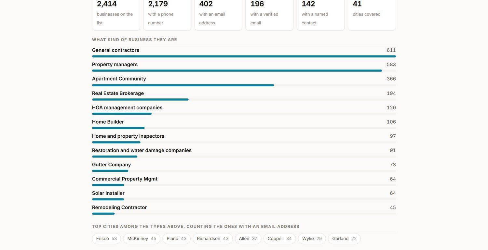

Jackson Roofing
A roofing presence that goes looking for work: local SEO, city pages, content, and a built outreach list.
Jackson Roofing is a family roofing company in Plano that has been on North Texas roofs since 2000. Great reputation, steady referrals, and almost no online presence to match. The job was not a website. It was the whole presence: the local search work, the site, the content engine that gets them found after a storm, and an outreach list that goes and finds commercial work instead of waiting for a homeowner to search.
What we doWhat we designed
A bold, high-contrast website that looks as sturdy as the work. The homepage leads with “Expert Roofing For Homes And Businesses,” a real photo of the branded truck on a job, and one clear action: explore the services and request a free inspection. Residential and commercial work are both spelled out so nobody has to hunt.
The copy is written in the owner's plain, honest voice, the same voice that wins jobs in person. It explains the work the way he would explain it standing in your driveway, then makes it easy to ask for a free look at your roof.


What we built
Beyond the main site, a dedicated landing page for the cities that matter most, so a search for roof repair in a specific town lands on a page about that town. On top of that runs a steady stream of blog content aimed at the exact questions homeowners type: cost questions, storm-damage questions, repair-or-replace questions, all built on our local SEO system.
Every page carries the schema and on-page structure Google needs to rank a local business, and the whole thing is designed to turn a search into a requested free inspection.
The outreach list
The half of this project that has nothing to do with a website. We built Jackson Roofing a list of the North Texas businesses that hire roofers: general contractors, property managers, apartment communities, real estate brokerages, HOA managers, home builders, inspectors, restoration companies. Each one is researched, sorted by trade and by city, and carries whatever contact route we could actually verify, so the list is something to work rather than something to look at. It sits on their dashboard, next to the published pages, and it is why this engagement is lead generation and not just a website.
The whole presence, not just the site.
What we designed
A bold, high-contrast website that looks as sturdy as the work.
What we built
Beyond the main site, a dedicated landing page for the cities that matter most, so a search for roof repair in a specific town lands on a page about that town.
The outreach list
The half of this project that has nothing to do with a website.
The result
A roofing company that finally looks online the way it performs in person, with a content engine putting it in front of North Texas homeowners the moment they need a roofer, and a list of 2,414 businesses to work through on the days the phone is quiet.
The part that is not a website.
Jackson Roofing opens this themselves. It is the outreach list we built them, counted and broken down by business type and city. The individual rows stay private to them.

Jackson Roofing, outreach list. 2,414 businesses across 41 cities, of which 2,179 carry a phone number and 402 an email address. Broken down by what kind of business they are, led by 611 general contractors and 583 property managers, then by city.
- 2,414 businesses across 41 cities
- 2,179 carry a phone number
- 402 carry an email address
- Led by 611 general contractors and 583 property managers
The result
A roofing company that finally looks online the way it performs in person, with a content engine putting it in front of North Texas homeowners the moment they need a roofer, and a list of 2,414 businesses to work through on the days the phone is quiet.
Want a build like this one?
Tell us what your business does and we will come back within one business day.
Request a free consultation